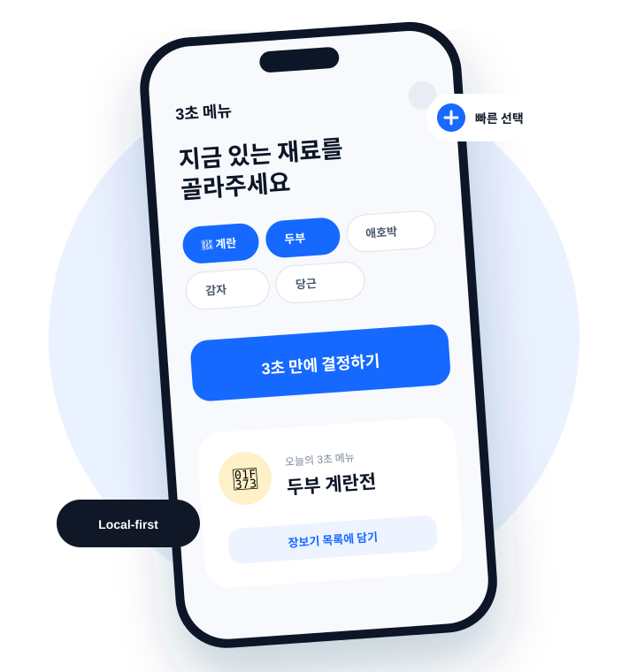

LIFE DECISION STUDIO · SEOUL
일상의 결정을
더 가볍게.
3SEC는 매일 반복되는 작은 고민을 빠르고 명확하게 끝내는 생활 기술을 만듭니다.
WHY 3SEC
좋은 도구는
고민의 시간을 돌려줍니다.
메뉴를 고르고, 필요한 것을 챙기고, 다음 행동을 결정하는 일. 작지만 자주 반복되는 선택은 생각보다 많은 에너지를 사용합니다.
우리는 사용자의 맥락을 이해하고 선택지를 단순하게 정리해, 생각보다 행동이 먼저 시작되는 경험을 설계합니다.
PRODUCT 01
오늘 뭐 먹지?
3초 메뉴
냉장고 속 재료와 지금의 상황을 고르면 집밥부터 배달·외식까지 바로 결정해 주는 모바일 생활 도구입니다.
- 즉시 추천오프라인 메뉴 데이터로 빠른 결과
- 상황 맞춤아이 연령, 재료, 기분까지 반영
- 행동 연결장보기와 배달까지 자연스럽게

HOW WE BUILD
빠르지만,
가볍게 만들지 않습니다.
-
01
3초 안에 이해
설명보다 먼저 사용할 수 있는 단순한 흐름을 만듭니다.
-
02
실제 행동으로 연결
추천에서 끝나지 않고 사용자의 다음 행동까지 이어갑니다.
-
03
연결이 없어도 유용하게
네트워크 상황에 덜 의존하는 로컬 우선 경험을 지향합니다.